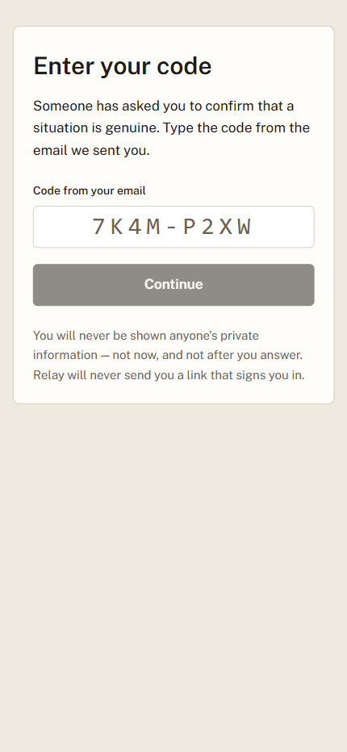
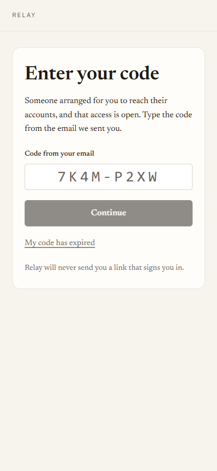

A guide for you and the people you trust — what it does, how each part works, and why
it is built the way it is.
Relay holds the things your family would need if you could not be reached — the
account that everything else recovers through, the bank, the policy number, the instruction that
only lives in your head — and hands them to specific people, only when specific people agree
something has actually happened.
It is not a password manager, and it is not a will. A password manager assumes you are there to
open it. A will assumes you are not coming back. Relay is for the long middle: the surgery, the
accident, the three weeks in hospital, the trip where nobody could reach you. Everything it does
is reversible by you, right up until you choose something that is not.
The one idea worth understanding
Nothing opens because a computer decided it should. Something opens because people you named
in advance said it was real. Relay's job is to make that agreement possible at three in the
morning, between people who may never have met, without any of them having to trust a stranger's
email.
Three promises the design keeps, everywhere, without exception.
Relay never sends you a link that signs you in. Not one. So any message claiming to
be us that asks you to click one is, categorically, not us. This is why you type short codes
instead of clicking links — it is mildly less convenient and it removes an entire class of
attack on your family.
What is inside your vault never leaves your browser unencrypted. Relay cannot read
your items. Neither can anyone who steals the database.
Everything that happens is written to a record that cannot be edited or deleted —
including by us. That is what makes the summary you read afterwards trustworthy rather than
merely reassuring.
What is in this guide
Part 1
Setting it up — the four things you do once
Part 2
Living with it — the part that lasts for years
Part 3
For the people you name — what they see and what is asked of them
Part 4
The day it matters — how a release actually runs
Part 5
When something goes wrong — lost phones, false alarms, leaving
Part 6
What Relay will not do, stated plainly
Part 1
Setting it up
Four things, done once. Most people finish in under an hour, and the order matters
more than the speed.
1.1 — Put in what actually matters
You · the Vault screen
Why this exists. The instinct is to put in everything. That is the wrong
instinct, and it is the main reason plans like this fail: a list of ninety accounts is a list nobody
can act on. Your family needs the four or five things that unlock the rest.
How it works. Add an item and Relay encrypts it in your browser before it is sent
anywhere. It then scores each item for consequence and sorts the list with the most consequential
first — the account that other accounts recover through outranks the one with the biggest balance,
because losing the recovery path means losing everything downstream.
Items are ordered by what would be hardest to live without, not by when you added them.
The line under each item tells you why it is ranked where it is.
Import CSV takes an export from a password manager if you would rather start from one.
The banner across the top is the single most useful thing on the screen. It answers one question
— if something happened tomorrow, would this work? — and it is honest about the answer.
The vault, most
consequential first. The prompt at the bottom points at the next thing that would actually help —
a vault nobody can open is a vault that does nothing.
1.2 — Name the people
You · the People screen
Why this exists. Two different jobs get confused constantly, and confusing
them is how a plan ends up doing nothing. Some people receive access. Other people are asked
whether the emergency is real. They can be the same person, but the roles are separate, and a
plan needs both.
Role
What they do
What they see
Who would step in (recipients)
Receive access to the items you assign
them, and only after a release opens.
Before a release: that they are standing by, for
whom, and how much is set aside — counts and categories only, never titles.
Who confirms it is real (verifiers)
Answer one question — is this
genuine? — and nothing else. They never receive access.
At the moment they are asked:
how much is at stake and what kind of thing it is. Never a title, never a contents.
Naming someone is only the first half. Once they accept, Relay derives a short phrase from
their account. You call them — an actual call — and check the phrase they read out matches the one
on your screen. That call is what turns "someone with this email address accepted" into "this is my
sister". Until you make it, their answer does not count towards opening anything.
Why a phone call, in a product that is otherwise entirely software. Every
purely-digital way of proving identity here reduces to trusting an email inbox, and an inbox is the
thing most likely to be compromised in exactly the scenario this product exists for. Two minutes on
the phone is stronger than anything we could build, and it costs you one call per person, once.
The People
screen: the coverage table, then the two rosters. Each person's line says what is still missing
rather than merely what state they are in.
1.3 — Decide who can reach what
You · the Rules screen
Why this exists. "My family gets everything" is not a plan, it is an
abdication. The person helping with your mother's care needs the health portal and the utility
account; they do not need your solicitor's file. Scoping access is what makes it safe to name more
than one person.
A rule is one sentence: this item → this person, under this kind of emergency,
to view or to act. You can build them by hand, or accept the suggestions Relay drafts
from what it already knows about your items — most people accept the draft and edit two lines.
View means read it. Act means use it — sign in, pay the bill, call the bank.
Reversible means access closes again when you check back in. This is the default and it
is the whole reason an emergency release is not frightening.
Release after N days holds a rule back — useful when you want the urgent things open
immediately and the rest only if you are still unreachable a week later.
Estate rules are permanent and Relay will not let you pretend otherwise.
The reversible option is disabled for them, because a handover that can be taken back is not a
handover. Everything else can be undone by checking in.
Existing rules
read as sentences. The trigger a rule is written for is created the moment you write the rule —
which is why an unused trigger never appears and can never fire.
1.4 — Set the conditions
You · the Triggers screen
Why this exists. The dangerous failure is not "it opened too late". It is
"it opened when nothing was wrong". Every default here leans towards staying shut.
Two settings, and one button you will hopefully never press.
Check-in interval. How long Relay waits before it starts asking whether you are all
right. Thirty days suits most people. Any deliberate action in the product counts as checking
in, so ordinary use keeps it quiet — you are not being asked to remember a chore.
Required confirmations. How many of your verifiers must agree before anything opens.
One is enough for a small circle. Two is meaningfully harder to fake and is worth it if you have
three or more verified people.
Initiate fires that trigger yourself, now — the "I know I am about to be unreachable"
button. It still requires your verifiers to confirm. It does not skip anyone.
A trigger
sits ARMED and does nothing until either you initiate it or you stop checking in. Armed is
the safe state, and every failure inside Relay resolves back to it.
1.5 — Someone to help you set it up
You · the Approvals screen
Why this exists. The person who most needs this is often the least likely to
do the typing — and the adult child who bought it is usually sitting next to them anyway. The
alternative, in practice, is that they sign in as you, which destroys every guarantee in this
document at once.
A helper can add and tidy your information. A helper can never open anything, decide who
gets access, or touch a release — anything that changes who can reach what comes to you as a
question. You choose them from people you have already named who have accepted, so this is always an
elevation of somebody known rather than an introduction of somebody new.
It does nothing until you record how you agreed to it — together in person, on paper, or
confirmed by them on a device. That record is not a formality: it is what makes handing somebody
this help legitimate rather than merely convenient, and it is why “in person” and
“on paper” are offered as equals rather than buried under a link.
Part 2
Living with it
This is the part that lasts for years, and the part most products get wrong by
demanding attention they have not earned.
2.1 — Knowing whether it would actually work
You · the banner on every screen
Why this exists. The worst outcome for a product like this is not failing.
It is appearing to work for four years and then failing on the one day it is needed. So the
banner is deliberately hard to satisfy and deliberately specific about what is missing.
It goes green when the plan could actually run — not when you have filled in every field. And
when it is not green it names the single fastest thing you could do next, rather than listing
everything imperfect about your setup.
What it says
What it means
Green
Enough verified people, enough coverage. If something happened tomorrow,
this works.
Nobody could confirm
You have named verifiers but not verified them, so nothing
can open. This is the most common state for a new plan and the phone call fixes it.
Your plan rests on one person
It works, but every verified person is needed and
at least one of them has no way back in if they lose their phone. Not urgent; worth an
afternoon.
2.2 — Checking in
You · anywhere
Signing in and doing something deliberate is a check-in. There is also an explicit I'm fine —
check in button on the Triggers screen for when you want to be certain. A check-in does three
things at once: it resets the clock, it reverses a release that is in progress, and it closes access
that has already opened. One action, all of it.
2.3 — Reading what happened
You · the Audit screen
Why this exists. Coming home and finding that people could see your accounts
is unsettling even when everything worked exactly as designed. The record is what converts that from
a vague unease into something you can actually check.
The top of the screen is the story in sentences: what was raised, who confirmed it, what was
opened, when it closed, and why. Beneath it is every entry in order, hash-chained so that changing
any one of them breaks the chain visibly. Verify chain re-computes it in front of you.
The summary
answers the questions a person actually has. The table beneath is the proof that the summary is
not just a nice sentence.
2.4 — Your account
You · the Account screen
Five things worth doing once, and one you may never need.
Your name. This is how you appear to everyone you trust. Set it. An emergency message
that says someone@gmail.com instead of "Margaret" is the worst possible moment for
your family to wonder whether the message is real.
Passkey. Your face, fingerprint or device PIN. Nothing to remember and nothing anyone
can email you that a stranger could imitate.
Recovery codes. Relay has no password. If you lose the phone with your authenticator on
it, these are the only way back. Get them now, while you still can.
Export everything. A readable file of every item, decrypted in your browser. Your data
is yours and leaving is not punished.
Subscription. Cancel any time. Nothing in your vault is deleted when a subscription
ends — the free limits apply only to adding more.
Close this account. Removes the vault, the people and the rules. Anyone relying on it
loses access immediately, and this cannot be undone.
Leaving is a
first-class path, not a support ticket. Export first, then close.
Part 3
For the people you name
Hand this part to them. It is written to be read by someone who has just been asked
to do something they did not sign up for.
3.1 — Someone has named you. What now?
Your person · the Accept screen
Why you are being asked to do anything at all, in advance. The alternative
is that the first time you hear from Relay is during an emergency, in an email, asking you to make a
decision about someone you love while holding a code you have never seen before. Accepting now — on
a calm Tuesday — means that on the bad day you simply sign in as yourself. There is nothing to
intercept, because nothing is sent.
How it works. The person who named you gives you a short code. They choose how: read out
on a call, texted, written down, handed over. You type it in, and you have an account. It is free,
it holds nothing of yours, and it exists so you can be recognised later.
Accepting does not open anything. It does not give you access to their
vault, and it does not tell them anything except that you have seen it. If you would rather not be
part of this, the honest thing is to say so — and there is a control for stepping down at any
time.
Typing a short code rather than clicking a link. That is deliberate: Relay never sends a link that
signs you in, so a message with one in it is not from us.
3.2 — Standing by
Your person · their Standby screen
Most of the time this screen says the most valuable thing it can say: nothing is open, and
there is nothing you need to do today. It shows who you are standing by for, what would happen
if an emergency were confirmed, and — if you are a recipient — how much has been set aside for you,
as counts and categories. Never titles. Never contents.
It also offers to set up a passkey. Worth doing: it is what lets you get back in on a new phone
without anyone having to reissue anything, and it means there is no code to keep track of.
Standing by. Step down from this is always available — being named is not a trap,
and someone who quietly stopped agreeing is worse than useless in an emergency.
3.3 — Asking them to open it
Your person · their Standby screen
Why this exists. The other paths all wait for something: for you to have
anticipated the emergency, or for a check-in interval measured in weeks to run out. The commonest
real case is neither — somebody is in hospital now and the person who would help needs
to ask.
Next to “nothing is open” there is a control to ask. It says plainly, before the form
is even shown, what asking costs: you are asked first, and everyone else you named is told
that a request was made, whatever the outcome. That is deliberate rather than a side effect
— it makes a quiet, covert attempt at somebody’s accounts impossible.
You then have a window to answer. If you cannot, the people you chose to confirm an emergency are
asked instead — so it does not depend on you being reachable, which is the entire point. Nobody
can wear you down with it either: three requests in twenty-four hours is the limit.
3.4 — The phone call
Both of you · two minutes, once
After you accept, the person who named you calls and asks you to read out a short phrase from
your screen. If it matches theirs, they mark you verified and your answer starts counting. If it
does not match, something is wrong and they should not proceed — that is the entire point of doing
it out loud.
Part 4
The day it matters
What actually happens, in order, and who is asked what.
4.1 — Something starts it
Either you initiated a trigger yourself, or you stopped checking in for longer than your interval
and Relay began asking. The trigger moves from ARMED to PENDING. Nothing has opened.
4.2 — Your verifiers are asked one question
Your verifiers · the decision screen
Why a question and not a notification. A notification that fires
automatically is a system that can be gamed by waiting. A person who knows you, answering "is this
real?", cannot be.
Each verified verifier is contacted. What they receive depends on how they are set up, and only
one case involves anything secret:
If they…
They receive
have a passkey or an authenticator
A message telling them to sign in.
No code, nothing to intercept.
are verified but have no way to sign in
A single-use code that expires in 72
hours. They need it; nobody else does.
were named but never verified
A message saying plainly that their answer would
not count yet. Better than letting someone believe they helped.
They are shown how much is at stake and what kind of thing it is, so they can judge
whether the request is proportionate. They are never shown a title and never shown contents. They
can answer three ways — yes, no, or I don't know — and "no" is offered with
exactly the same prominence as "yes".

Code entry — the way in for a verified verifier who holds no passkey.
4.3 — The grace window
Once enough verifiers agree, the trigger enters GRACE. You are told, on every channel
Relay has for you. If you are fine, checking in now stops everything. This window exists because the
most likely emergency is a misunderstanding.
4.4 — Access opens
Your recipients · their screen
Only now does anything open, and only what your rules assigned. Someone who accepted a standby
account signs in as themselves; someone who never accepted receives a single-use code that lasts 24
hours. In both cases, decryption happens in their browser — Relay itself still cannot read the
items.

The recipient's way in when they never accepted a standby account. My code has
expired re-sends to the address already on file — never to one typed here.
4.5 — It closes again
You check in. Every reversible grant closes, tokens stop working, and the whole episode becomes
a paragraph on your audit screen. Nothing needs to be undone by hand.
Part 5
When something goes wrong
The paths that matter most are the ones nobody rehearses.
5.1 — It was a false alarm
You · the Triggers screen
Stand down — re-arm stops a release in progress or closes one that has already opened, and
puts the trigger back to armed and ready. This is the control you want almost every time.
Cancel permanently retires the trigger for good. It is deliberately separated and asks for
confirmation, because someone stopping a false alarm at speed must not retire their whole plan by
reaching for the innocuous-looking word on the screen.
5.2 — Someone lost their phone
Your person · the Emergency code screen
Why this exists. Not everyone owns a smartphone, and everyone eventually
loses one. Without this, the seventy-year-old you most want to include is excluded by their own
technology, and anyone whose authenticator is at the bottom of a river has to reach you — when you
may be exactly the person who cannot be reached.
You can issue anyone an emergency code, in calm, to keep somewhere safe. It works once. When it
is used, you are told, and you are asked to check it was really them.
Issue these in advance, not during the emergency. A code you would have to
issue while unconscious is not a fallback. The banner will tell you when your plan depends on
somebody who has no way back in.
The way back in when the usual sign-in is gone.
5.3 — The code never arrived, or ran out
Your person · the code screen
Both the access screen and the confirm screen carry “my code has expired, or never
arrived”. It sends again — to the address already on file, never to one typed in, so
it cannot be used to redirect anything at somebody else. What arrives depends on how that person is
set up: a reminder to sign in if they have a passkey, a fresh code if they do not.
This matters most for the people confirming an emergency, because one of them being stuck holds
up everybody else. If they still cannot get in, the others who were asked can still answer.
5.4 — Somebody cannot use an account at all
You · the People screen
Some people will never accept — no smartphone, no interest, no email they check. Marking them
emergency code only tells Relay that this is deliberate, so it stops asking you to chase
them. It is honest rather than quiet: it also says clearly that they will never count towards your
plan working, and the banner arithmetic gets louder, not softer.
5.5 — Somebody wants out
Your person · their Standby screen
Step down from this removes them, tells you, and recalculates your plan. Someone who no
longer wants the responsibility is not a safe person to depend on, so making this easy is a safety
feature rather than a courtesy.
5.6 — You want out
You · the Account screen
Export everything first — it is a readable file, decrypted in your browser. Then close the
account. Everyone relying on it loses access immediately. The tamper-evident event log is kept, as
the privacy page says: it holds no secrets, only the record of what happened and when.
Part 6
What Relay will not do
Stated plainly, because a product that overstates itself in this category is
dangerous rather than merely disappointing.
It will not open on its own. Silence never resolves towards open. If nobody confirms,
nothing happens — which is the correct failure, and it means a plan whose people cannot be
reached is a plan that does nothing.
It will not decide anything for your family. It carries a decision your people make. It
does not make one.
It cannot read your items, and cannot recover them for you. The encryption that keeps
them from us keeps them from us in every circumstance.
It will not make an unverified person count. Naming someone is not verifying them. The
phone call is not optional, and no amount of setup substitutes for it.
It is not a will. An estate handover moves things to people you chose; it does not
settle an estate, and it does not replace advice from someone qualified to give it.
It cannot help someone who has neither accepted nor been given a code. That person is
excluded by design, the product says so plainly rather than showing a hopeful amber light, and
the fix is always the same: issue them a code while everything is calm.
The public pages
The landing page explains the product to someone who has never heard of it. The Terms and the
Privacy page are written to be read — including the section addressed to people who did not sign up
and were merely named by someone else, which is the population least served by ordinary legal
boilerplate.